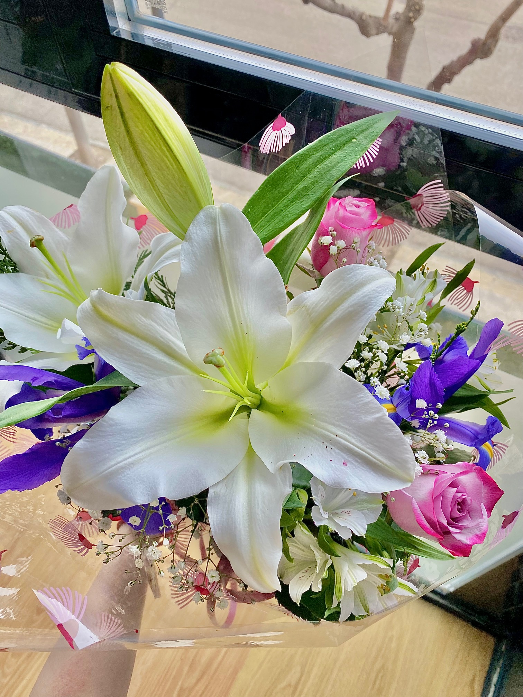
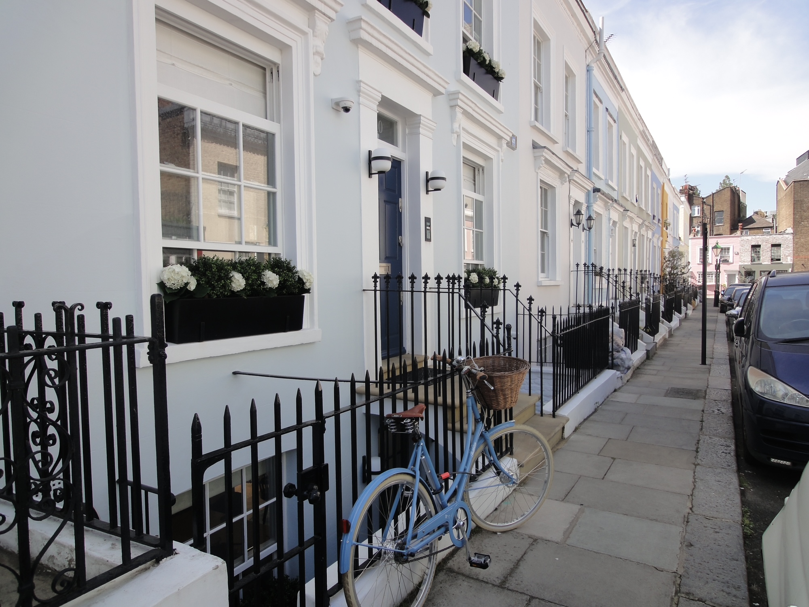
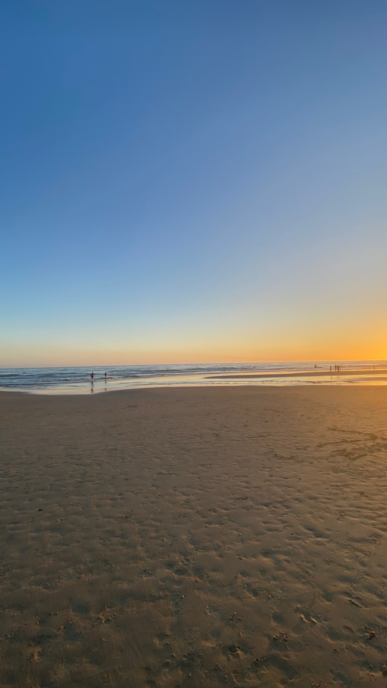
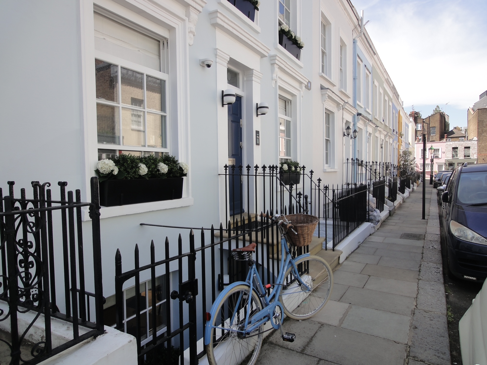
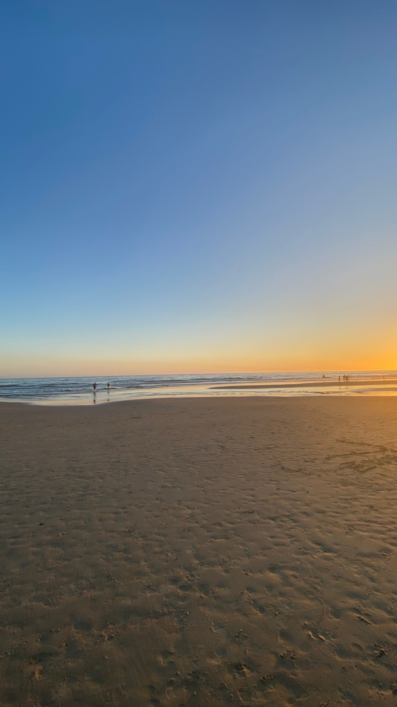
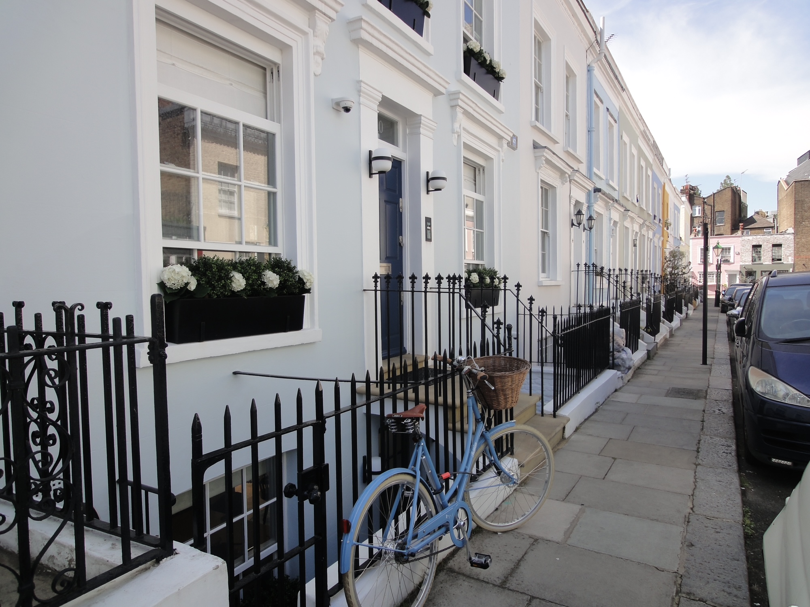
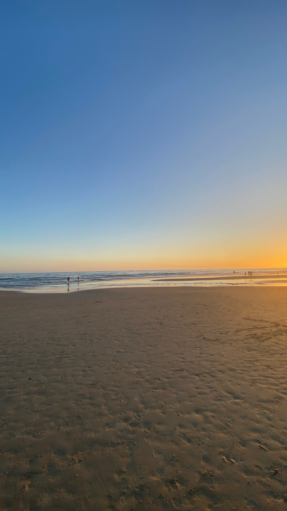

Sobre mi
¡Hola! Soy Laura, tengo 19 años y estudio Diseño Multimedia y Gráfico.
Lo que más me gusta de la carrera es el branding y la tipografía. Me gustan mucho las flores, diseñar, Londres y los atareceres; son cosas que me inspiran un montón, sobre todo por sus colores. Mi color favorito es el blanco y me encantan los perros pero prefiero los gatos.

 




